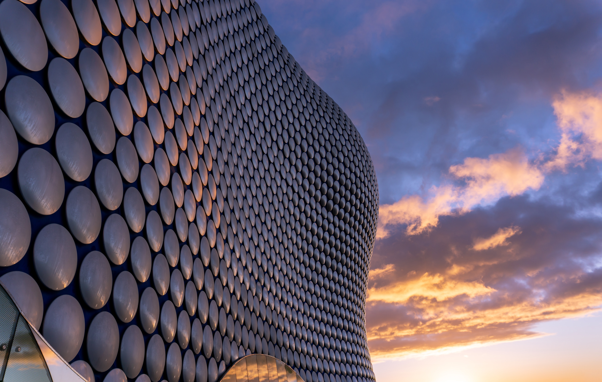
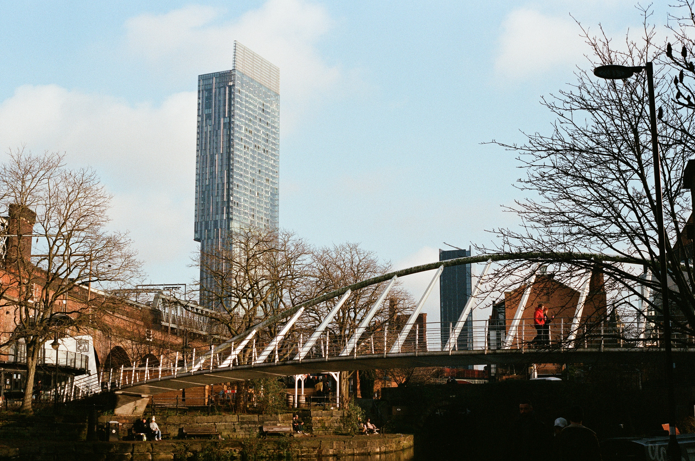
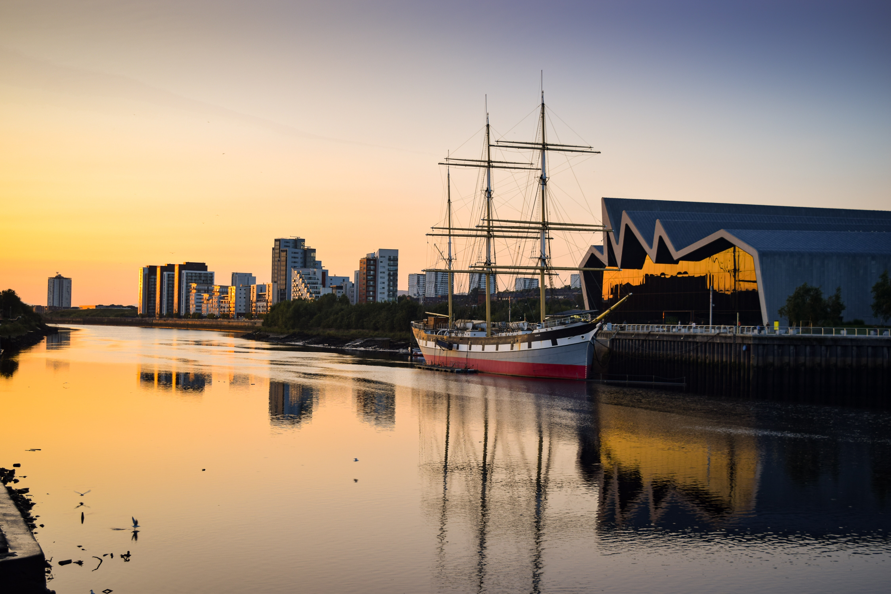
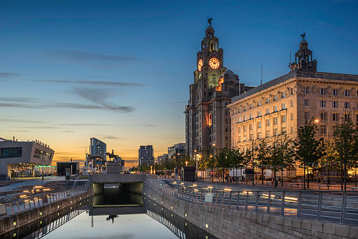

The top 10 cities in the UK
Click on the image to be taken to the city's tourist board.

1. London
The capital and largest city of the UK, known for its cultural diversity, historic landmarks, and global financial hub status.

2. Birmingham
Located in the West Midlands, it is the second-largest city in the UK and a major center for manufacturing and commerce.

3. Manchester
Situated in the northwest of England, it's known for its rich industrial heritage, vibrant arts scene, and popular football clubs.

4. Glasgow
Located in Scotland, it is the largest city there and has a strong history of industry, education, and culture.

5. Liverpool
Also in the northwest of England, Liverpool is famous for its maritime history, music scene, and as the birthplace of The Beatles.